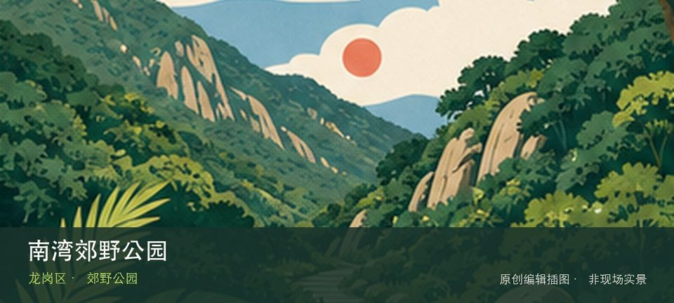
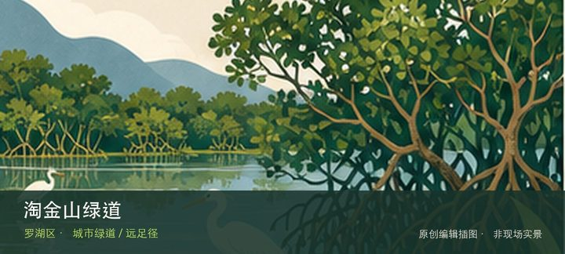

适合谁
适合有基础步行体力、愿意按天气调整路线的人；行动不便者应只选择平缓开放段。

SHENZHEN GUIDE · 324
南湾街道简竹路支路，梧桐山风景区北侧 · 郊野公园
南湾郊野公园位于南湾街道简竹路支路，梧桐山风景区北侧，南湾街道新开放的郊野公园把山林架空步道、滨水生态空间与连续缓坡游线组合在一起，可从城市社区快速进入梧桐山北侧的山水过渡地带。把注意力放在山林架空步道和滨水生态空间，能避免只凭名称或网红照片判断这里。现场不必追求一次走完，先在山林架空步道与滨水生态空间之间确定主线，再按体力、日照和天气保留折返方案。山地、滨水或林下路面会随降雨改变，当天预警和开放边界始终比旧轨迹更优先。
WHY GO
适合有基础步行体力、愿意按天气调整路线的人；行动不便者应只选择平缓开放段。
首次游览南湾郊野公园不求走全，先完成山林架空步道这一项观察，再根据同行者体力选择滨水生态空间，并保留原路退出方案。
周末及节假日可在地铁14号线石芽岭站A2口或3号线丹竹头站①站台乘南湾郊野公园假日专线；往公园08:30—16:30、返程09:30—17:20，票价5元，班次以当日公告为准。
公园周边停车资源有限，官方已用假日专线分流；自驾只按现场引导进入正规停车区，满位后不要在简竹路、吉厦片区道路候位，优先改乘地铁加专线。
10月至次年4月较适合林下步行；5—9月湿热且午后雷雨多，暴雨或台风预警时不进山，雨后架空步道与坡道仍需防滑。
NEARBY IDEAS

编辑配图·非现场实景淘金山绿道位于东湖公园南侧至沙湾路，主线与布心山登山道合计约7.07公里，以山林、旧边防道路和观景驿站形成郊野慢行线。
 编辑配图·非现场实景
编辑配图·非现场实景
樟树布公园位于南湾樟树布社区，河岸绿地、社区步道和小型活动空间构成低调日常公园，适合观察南湾高密度社区的水岸缝隙。
 编辑配图·非现场实景
编辑配图·非现场实景
深圳市龙岗区万国珠宝汇矿物博物馆位于六约珠宝产业区，矿物晶体、宝石原石和珠宝加工在产业场景中连续呈现，可从自然形成看到商业分类与设计应用。